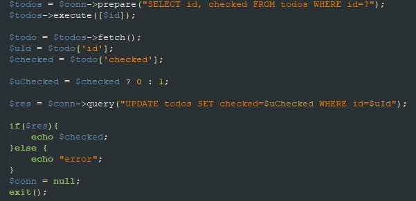

Saya mengerjakan bagian php dan database dari project UAS ini.
Sebelumnya di project front end adalah pembuatan website todolist.
Kali ini sama, namun kita memakai back end. Kita menyimpan databasenya di MYSQL.
Awalnya kita buat dulu file index untuk memuat halaman utama project kita.
Lalu buat databasenya di MYSQL dengan nama to_do_list.
Databasenya terdiri dari sebuah tabel dengan 4 kolom, yaitu kolom id(int primary key auto increment), title
(text), time(date_time current time) , dan checked(boolean)
time tipe datanya datetime (current time) agar ketika todolistnya terinput menunjukkan saat yang sama ketika todolistnya terinput
lalu hubungkan dengan php di file khusus db_conn.php
Hubungkan database dengan
dengan PDO Extension, ekstensi php agar database tidak hanya terikat dengan MYSQL saja
tidak lupa juga menambah fungsi catch
Lalu di folder app sendiri ada 3 file yaitu add, check, dan remove.
Di file "add" untuk menambah to do list, lalu di masukkan ke database kita.
agar user tidak menginput data kosong, maka akan terlihat pesan error di url page, karena ada perintah get di form.
dan di kolom todolist akan muncul "this file is required"
Untuk menginput data ke database kita, dan akan muncul pesan ../index.php?mess=success
Di file "check", untuk menclick centang pada todolist kita yang sudah selesai. Sekaligus membuat id baru di databasenya.

file "remove", untuk menghapus todolist baik di website maupun di database.
Lalu juga ada beberapa fitur penerapan fungsi MYSQL seperti
SELECT, INSERT INTO,UPDATE,DELETE
INSERT INTO
UPDATE
DELETE
Lalu fitur-fitur lainnya:
Untuk mengurutkan todolist(berdasarkan id) dari bawah ke atas(todolist yang paling lama ditambahkan akan ada diurutan bawah).
Untuk menampilkan gambar bila todolist sedang kosong.
Untuk mengolah MySQL dengan fungsi-fungsi PHP, baik ketika menambah todolist, mengchecklist, maupun menghapusnya
Untuk memeriksa variabelnya sudah diinput atau belum
jika belum, maka akan terpampang pesan error di url (dari variable_GET)
dan akan ada perubahan style sebagai peringatan pada user